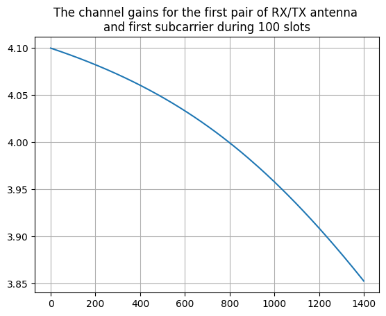

Channel timing
This notebooks shows the timing characteristics of a CDL channel model as it is applied to input signals for a duration of 100 slots.
[1]:
import numpy as np
import scipy.io
import time
import matplotlib.pyplot as plt
from neoradium import Carrier, Modem, CdlChannel, AntennaPanel, Grid, Waveform, random
from neoradium.utils import getNmse, getMse
[2]:
# Create a random grid and the corresponding TX waveform
carrierFreq=4e9 # 4 GHz
carrier = Carrier(startRb=0, numRbs=25, spacing=30) # Also try other subcarrier spacing values
bwp = carrier.curBwp
txGrid = bwp.createGrid(numPlanes=8)
stats = txGrid.getStats()
modem = Modem("16QAM")
numRandomBits = stats['UNASSIGNED']*modem.qm
bits = random.bits(numRandomBits)
symbols = modem.modulate(bits)
indexes = txGrid.getReIndexes("UNASSIGNED")
txGrid[indexes] = symbols
txWaveform = txGrid.ofdmModulate(carrierFreq)
print(bwp)
print("Shape of transmitted signal in time domain:",txWaveform.shape)
Bandwidth Part Properties:
Resource Blocks: 25 RBs starting at 0 (300 subcarriers)
Subcarrier Spacing: 30 KHz
CP Type: normal
bandwidth: 9 MHz
symbolsPerSlot: 14
slotsPerSubFrame: 2
nFFT: 1024
frameNo: 0
slotNo: 0
Shape of transmitted signal in time domain: (8, 15360)
[3]:
# No Channel and no noise performance: ofdmModulate -> ofdmDemodulate
rxGridTD = txWaveform.ofdmDemodulate(bwp, f0=carrierFreq)
print(f"NMSE: {getNmse(txGrid.grid,rxGridTD.grid)}")
print(f"MAE: {np.abs(txGrid.grid-rxGridTD.grid).max()}")
NMSE: 4.011172718876436e-32
MAE: 8.005932084973443e-16
[4]:
# Create a CDL-D channel
channel = CdlChannel(bwp, 'D', delaySpread=300, carrierFreq=4e9, dopplerShift=15,
txAntenna = AntennaPanel([2,4], polarization="|"), # 8 TX antenna
rxAntenna = AntennaPanel([1,2], polarization="|"), # 2 RX antenna
seed = 1234)
channel
[4]:
CDL-D Channel Properties:
carrierFreq: 4 GHz
normalizeGains: True
normalizeOutput: True
txDir: Downlink
filterLen: 16 samples
delayQuantSize: 64
stopBandAtten: 80 db
dopplerShift: 15 Hz
coherenceTime: 0.028209479177387815 Sec.
delaySpread: 300 ns
ueDirAZ: 0.0°, 90.0°
Cross Pol. Power: 11 db
angleSpreads: 5° 8° 3° 3°
TX Antenna:
Total Elements: 8
spacing: 0.5ùúÜ, 0.5ùúÜ
shape: 2 rows x 4 columns
polarization: |
Orientation (ùõº,ùõÉ,ùõÑ): 0¬∞ 0¬∞ 0¬∞
RX Antenna:
Total Elements: 2
spacing: 0.5ùúÜ, 0.5ùúÜ
shape: 1 rows x 2 columns
polarization: |
Orientation (ùõº,ùõÉ,ùõÑ): 0¬∞ 0¬∞ 0¬∞
hasLOS: True
LOS Path:
Delay (ns): 0.00000
Power (db): -0.20000
AOD (Deg): 0
AOA (Deg): -3
ZOD (Deg): 1
ZOA (Deg): 1
NLOS Paths (13):
Delays (ns): 0.000 10.50 183.6 408.9 421.5 541.2 778.8 532.5 1212. 2381. 2827. 2912.
3757.
Powers (db): -13.5 -18.8 -21.0 -22.8 -17.9 -20.1 -21.9 -22.9 -27.8 -23.6 -24.8 -30.0
-27.7
AODs (Deg): 0 89 89 89 13 13 13 35 -64 -33 53 -132
77
AOAs (Deg): -180 89 89 89 163 163 163 -137 74 128 -120 -9
-84
ZODs (Deg): 98 86 86 86 98 98 98 98 88 91 104 80
86
ZOAs (Deg): 82 87 87 87 79 79 79 78 74 78 87 71
73
[5]:
# Apply the channel in time domain:
maxDelay = channel.getMaxDelay()
paddedTxWaveform = txWaveform.pad(maxDelay) # Pad the waveform with zeros
rxWaveform = channel.applyToSignal(paddedTxWaveform) # Apply the channel to the waveform
syncedWaveform = rxWaveform.sync(channel.chanOffset) # Synchronization
rxGridTd = syncedWaveform.ofdmDemodulate(bwp, f0=carrierFreq)
# Apply the channel in frequency domain and compare
chanMat = channel.getChannelMatrix()
rxGridFd = txGrid.applyChannel(chanMat)
print(f"NMSE: {getNmse(rxGridFd.grid,rxGridTd.grid)}")
NMSE: 7.131743705718165e-05
[6]:
# Apply the channel to 100 slots of input signal
chanMats = []
for s in range(100):
# Go to next slot and do it again:
channel.goNext()
txGrid = bwp.createGrid(numPlanes=8)
stats = txGrid.getStats()
numRandomBits = stats['UNASSIGNED']*modem.qm
bits = random.bits(numRandomBits)
symbols = modem.modulate(bits)
indexes = txGrid.getReIndexes("UNASSIGNED")
txGrid[indexes] = symbols
txWaveform = txGrid.ofdmModulate(carrierFreq)
# Apply the channel in time domain:
maxDelay = channel.getMaxDelay()
paddedTxWaveform = txWaveform.pad(maxDelay) # Pad the waveform with zeros
rxWaveform = channel.applyToSignal(paddedTxWaveform) # Apply the channel to the waveform
syncedWaveform = rxWaveform.sync(channel.chanOffset) # Synchronization
rxGridTd = syncedWaveform.ofdmDemodulate(bwp, f0=carrierFreq)
# Apply the channel in frequency domain and compare
chanMat = channel.getChannelMatrix()
rxGridFd = txGrid.applyChannel(chanMat)
assert getNmse(rxGridFd.grid,rxGridTd.grid)<1e-3
chanMats += [chanMat]
[7]:
gs = np.concatenate([chanMat[:,0,0,0] for chanMat in chanMats])
plt.plot(np.abs(gs))
plt.title("The channel gains for the first pair of RX/TX antenna \n"+
"and first subcarrier during 100 slots")
plt.grid()

[ ]: